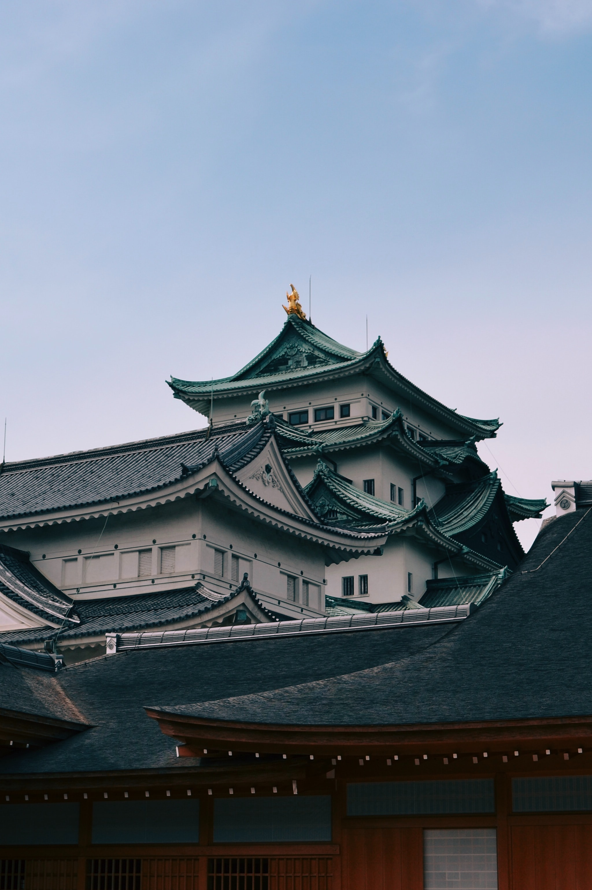
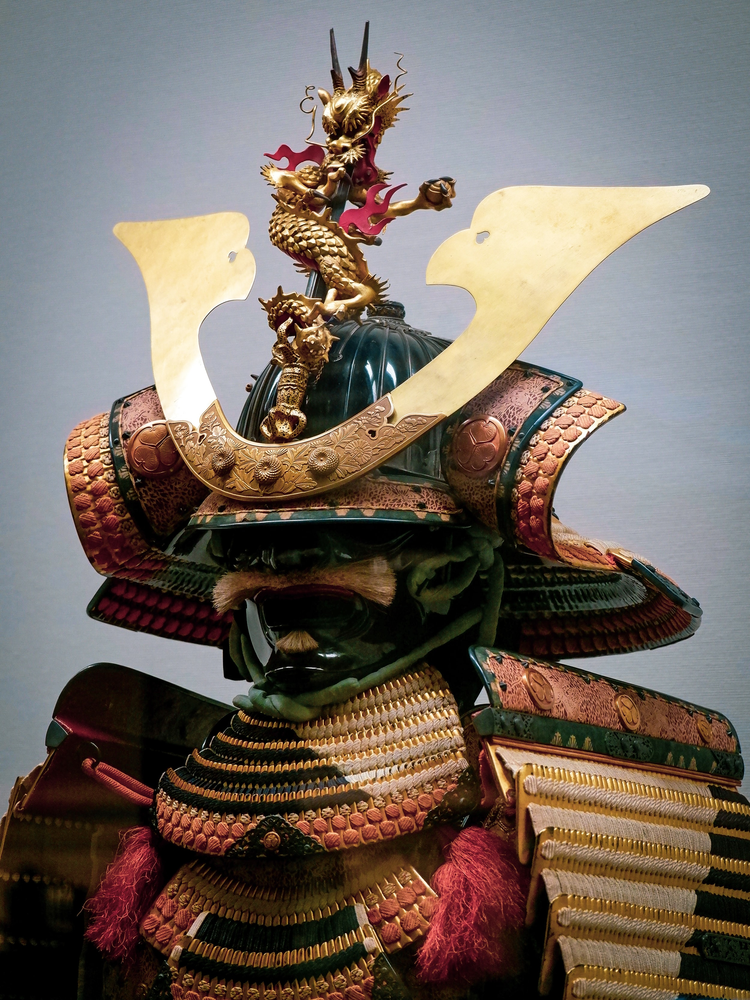

Japan's History
 Id consectetur purus ut faucibus pulvinar elementum integer. Enim nulla aliquet porttitor lacus luctus accumsan tortor posuere ac. Diam sit amet nisl suscipit adipiscing bibendum. Neque gravida in fermentum et sollicitudin ac. Senectus et netus et malesuada fames ac. Nunc mattis enim ut tellus. Gravida rutrum quisque non tellus orci. Diam sit amet nisl suscipit adipiscing bibendum est ultricies integer. Condimentum mattis pellentesque id nibh tortor. Adipiscing vitae proin sagittis nisl rhoncus. Tincidunt eget nullam non nisi est sit. Bibendum ut tristique et egestas quis. Sem fringilla ut morbi tincidunt augue.
The Culture of the Samurai
 Augue interdum velit euismod in. Cursus turpis massa tincidunt dui ut ornare. Orci phasellus egestas tellus rutrum tellus pellentesque eu. Sagittis nisl rhoncus mattis rhoncus urna neque viverra justo nec. Ut enim blandit volutpat maecenas volutpat. Sit amet nulla facilisi morbi tempus iaculis urna. Scelerisque in dictum non consectetur a erat. Sollicitudin tempor id eu nisl. Fermentum odio eu feugiat pretium nibh ipsum consequat. Ullamcorper eget nulla facilisi etiam. A condimentum vitae sapien pellentesque habitant morbi. Id faucibus nisl tincidunt eget nullam non. Tellus mauris a diam maecenas. Vestibulum sed arcu non odio euismod. At ultrices mi tempus imperdiet nulla malesuada pellentesque elit. Pellentesque pulvinar pellentesque habitant morbi tristique senectus et netus et.
The current Japan
 Ultrices vitae auctor eu augue ut lectus. Consectetur lorem donec massa sapien. Vitae suscipit tellus mauris a. Velit sed ullamcorper morbi tincidunt ornare. Turpis massa tincidunt dui ut ornare lectus sit amet est. Faucibus turpis in eu mi bibendum neque egestas. Mauris a diam maecenas sed enim ut sem viverra aliquet. Sagittis purus sit amet volutpat consequat mauris nunc. Tristique senectus et netus et. Posuere morbi leo urna molestie at elementum. Nibh tortor id aliquet lectus. Eget nunc scelerisque viverra mauris in aliquam sem. Diam phasellus vestibulum lorem sed risus ultricies tristique. Felis donec et odio pellentesque diam volutpat commodo.
Ultrices vitae auctor eu augue ut lectus. Consectetur lorem donec massa sapien. Vitae suscipit tellus mauris a. Velit sed ullamcorper morbi tincidunt ornare. Turpis massa tincidunt dui ut ornare lectus sit amet est. Faucibus turpis in eu mi bibendum neque egestas. Mauris a diam maecenas sed enim ut sem viverra aliquet. Sagittis purus sit amet volutpat consequat mauris nunc. Tristique senectus et netus et. Posuere morbi leo urna molestie at elementum. Nibh tortor id aliquet lectus. Eget nunc scelerisque viverra mauris in aliquam sem. Diam phasellus vestibulum lorem sed risus ultricies tristique. Felis donec et odio pellentesque diam volutpat commodo.